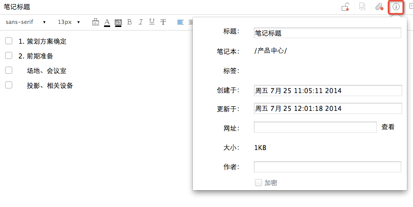
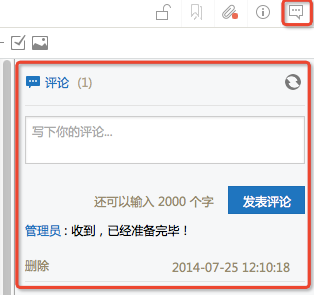
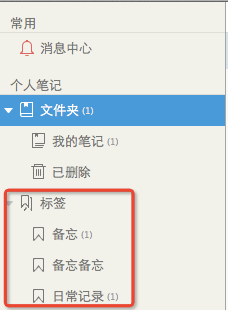

点击笔记，选择右上角的笔记信息按钮，可查看笔记相关属性

笔记本：笔记所在目录
标签：笔记添加的标签
创建时间与更新时间
网址：若当前笔记为使用网页剪辑器保存，此处显示原网址，可点击”查看“在浏览器中打开
大小与作者
若当前笔记在其他客户端被加密，加密前的复选框为选中状态
点击笔记右上角的评论按钮，可打开评论区域 
左侧常用区域中，点击标签分类，可查看标签下的笔记

通过微信收藏的笔记，默认保存在个人笔记--微信收藏目录中。了解详情点击:如何保存微信内容到为知笔记？
通过@保存到为知笔记 收藏的微博，默认保存在个人笔记--微博收藏 目录中
通过mywiz邮箱手机的笔记，默认保存在个人笔记--我的邮件目录。更多有关mywiz邮箱请点击：mywiz邮箱使用方法